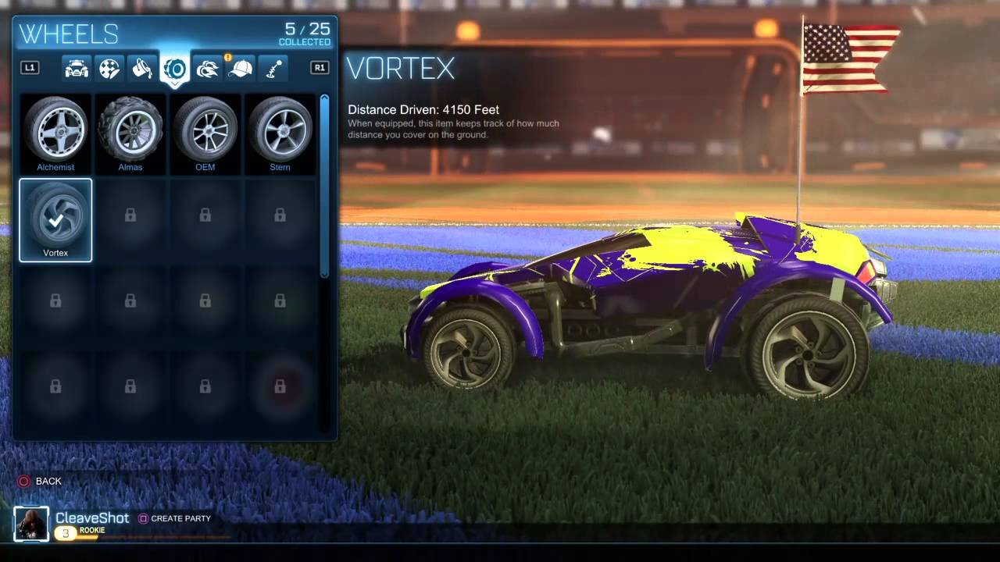

Sortie Du jeu:
Rocket League est sorti sur Windows et sur PlayStation 4, en février 2016 sur Xbox One, en septembre 2016 sur Linux et Mac et en novembre 2017 sur Nintendo Switch.
Type de jeu:
Rocket League est jeu de type sport.
Créateur:
Psyonix a créer Rocket League.
Description:
Rocket League est un jeu où des voitures jouent au football.
Personalisation:
Dans ce jeu on peut aller dans le garage où l'on peut tout personaliser su sa voiture. On gagne des objets de personalistions en gagnant des parties.

Mode de jeu:
Duel : Jouez en un contre un ;
Double : Jouez en Deux contre Deux ;
Standard : Jouez en Trois contre Trois ;
Chaos : Jouez en Quatre contre Quatre ;
Jour de Neige : Jouez au hockey sur glace sur un terrain couvert de glace, Trois contre Trois en mode en ligne (sorti en décembre 2015 pour une durée temporaire, fut disponible en mode hors ligne et en ligne à tout moment depuis avril 2016) ;
Rocket Labs : Jouez sur des arènes expérimentales avec effet "Tron", Trois contre Trois en mode en ligne (sorti en février 2016, supprimé en décembre 2016 mais les arènes restent disponible dans Rumble en mode en ligne puis réintégré en mars 2017) ;
Paniers : Jouez sur un terrain de Basket, Deux contre Deux en mode en ligne (sorti en avril 2016).
Rumble : Jouez avec des power-ups, Trois contre Trois en mode en ligne (sorti en septembre 2016).
Casse-briques : Jouez sur un terrain composé de briques, Trois contre Trois en mode en ligne (sorti en mars 2017).